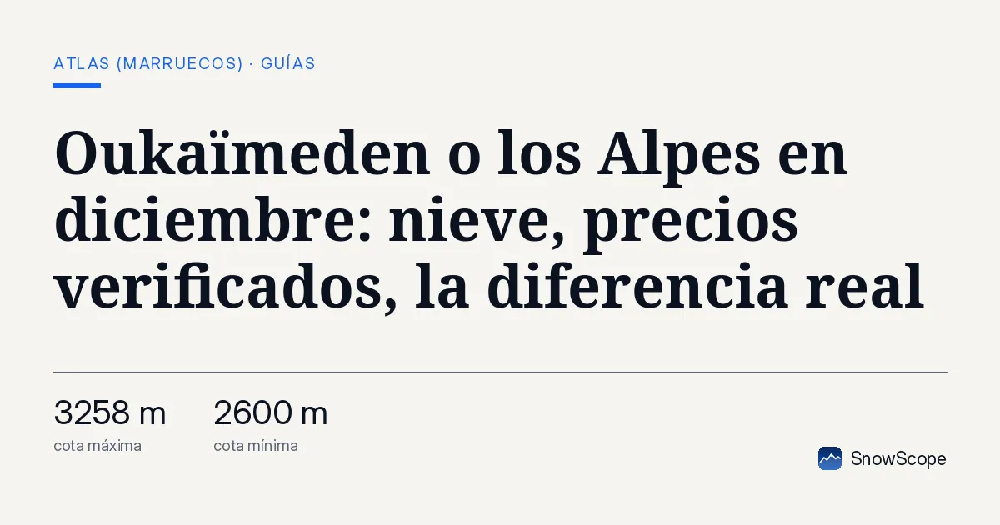

Oukaïmeden o los Alpes en diciembre: nieve, precios verificados, la diferencia real
Un 15 de diciembre típico, Oukaïmeden tiene 16 cm de nieve a media altura mientras Val Thorens llega a 89 cm y Chamonix a 65 cm. No encontramos tarifa oficial en línea para Oukaïmeden, así que comparamos lo que pudimos verificar: 46 inviernos de historial de nieve y los precios reales de los remontes de los Alpes.
Consulta la previsión de nieve en tiempo real de Oukaïmeden en la app SnowScopeEspesor de nieve, alertas de nieve polvo y mapa 3D, gratis.
Espesor de nieve a principios de diciembre en tres macizos
El 15 de diciembre en un invierno típico, la historia cambia drásticamente según la altitud y la ubicación. Las pistas medias de Oukaïmeden (2929 m) tienen solo 16 cm, y solo uno de cada nueve inviernos alcanza 50 cm. La media montaña de Val Thorens (2498 m), más baja que Oukaïmeden, muestra 89 cm con la mitad de todos los inviernos a 50 cm o más. Grands Montets en Chamonix a media altura (2001 m), aún más baja, registra 65 cm en diciembres típicos.
Las altitudes cuentan la historia. En la cima de Val Thorens (3175 m) encuentras 159 cm el 15 de diciembre. En la cima de Chamonix (2768 m), 157 cm. El pico de Oukaïmeden (3258 m) llega a 17 cm. El Atlas recibe menos humedad en diciembre; los Alpes se enfrentan a tormentas atlánticas y se benefician de sus medias montañas más altas. Para esquiadores de diciembre, los Alpes ofrecen cobertura mucho más fiable.

Qué significan realmente las probabilidades de buenas condiciones
El 15 de diciembre, cuatro de cada cinco inviernos en Val Thorens tienen 50 cm o más. En Chamonix, es tres de cada cinco. En Oukaïmeden, solo uno de cada nueve. Esto importa si reservas con una semana de anticipación: los Alpes casi garantizan nieve esquiable a mediados de mes; el Atlas no. La diferencia se amplía hacia Navidad. El 25 de diciembre, el 93 % de los inviernos en Val Thorens superan los 50 cm, frente al 13 % en Oukaïmeden a media montaña.
Forfaits: lo que podemos verificar
Val Thorens ofrece claridad. El forfait de un día para adultos de Les 3 Vallées cuesta 75,70 euros del 5 al 18 de diciembre de 2026 (temporada baja), luego 84,20 euros a partir del 19 de diciembre. Mont-Blanc Unlimited en Chamonix oscila entre 75 y 104 euros por día entre el 28 de noviembre y el 18 de diciembre, con el precio subiendo cada semana.
Oukaïmeden no presenta tarifa oficial en línea desde el 13 de noviembre de 2026. Los forfaits y alquileres se tramitan en la estación. No publicamos precio antes que adivinar. Para un esquiador europeo, la falta de certeza de precios se suma al riesgo de reserva.
Dónde residen los ahorros reales
Si vives en Marrakech, Oukaïmeden está a 50 km: sin vuelo, sin semana de alquiler, sin hotel lejos de casa. Para un local, esa es una ventaja real. Para un europeo, el vuelo a Marruecos reemplaza el vuelo a Francia, y cuesta dinero similar. El precio del forfait importa menos que las probabilidades de nieve: pagar 75 euros por 89 cm es mejor valor que pagar nada por 16 cm y encontrar rocas.
Cuándo tiene sentido Oukaïmeden
Diciembre es temprano en el ciclo del Atlas. Febrero y marzo son los meses punta: la media montaña promedia 44 cm en febrero y 53 cm en marzo, con la mitad de los inviernos alcanzando 50 cm o más. Una excursión de diciembre funciona mejor como una salida rápida desde Marrakech después de nieve fresca, no como una vacación reservada con meses de anticipación. Por el contrario, los Alpes mantienen a los esquiadores de diciembre más seguros con su profundidad fiable a mediados de mes y sus cimas más altas.
Consejos para esquiadores
- Alpes antes del 19 de diciembre: reserva la tarifa de temporada baja de Les 3 Vallées en Val Thorens para nieve garantizada a media montaña en 89 cm típicos.
- Chamonix: los precios suben durante diciembre; reserva con antelación la tarifa de temporada temprana de 75 euros si puedes comprometerte con fechas antes del 18 de diciembre.
- Oukaïmeden: trátalo como una excursión de último momento desde Marrakech después de una tormenta, no como una reserva de una semana. Pregunta los precios de los remontes a la llegada.
- Para una semana de esquí europea en diciembre, los Alpes ofrecen mejores probabilidades que el Atlas. Planifica Oukaïmeden para febrero o marzo en su lugar.
- Consulta el mapa de nieve de SnowScope la semana antes de viajar; las condiciones varían mucho más en el Atlas que en los Alpes.
Sobre estas cifras
Los espesores de nieve de las estaciones son la nieve más profunda en las pistas altas en la fecha indicada; son estimaciones para una zona, no una medida en un punto. Las previsiones pueden cambiar. Consulta siempre el boletín oficial de aludes antes de salir fuera de pista.
Citar este informe
Para investigación, docencia o prensa: cifras y gráficos reutilizables libremente bajo CC BY 4.0 con esta cita.
SnowScope (2026), Oukaïmeden o los Alpes en diciembre: nieve, precios verificados, la diferencia real, https://snowscope.app/blog/es/2026/11/oukaimeden-ou-alpes-week-end-ski-decembre-prix.html, consultado el 2026-11-14
SnowScope (Atlas Labs). (2026, November 14). Oukaïmeden o los Alpes en diciembre: nieve, precios verificados, la diferencia real. SnowScope snow reports. https://snowscope.app/blog/es/2026/11/oukaimeden-ou-alpes-week-end-ski-decembre-prix.html
BibTeX
@misc{snowscope2026oukaimedenoualpesweekend,
author = {{SnowScope (Atlas Labs)}},
title = {Oukaïmeden o los Alpes en diciembre: nieve, precios verificados, la diferencia real},
year = {2026},
month = nov,
howpublished = {\url{https://snowscope.app/blog/es/2026/11/oukaimeden-ou-alpes-week-end-ski-decembre-prix.html}},
note = {Published 2026-11-14 13:29 UTC; accessed 2026-11-14}
}· CC BY 4.0 · Métodos, datos y herramientas →
Oukaïmeden: nieve y temperatura según la altura, este invierno vs el pasado (herramientas) →
Sigue Oukaïmeden
Gratis: un aviso cuando llega la nieve y la previsión cada mañana.